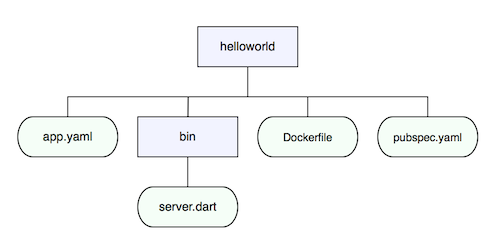
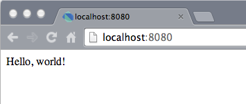
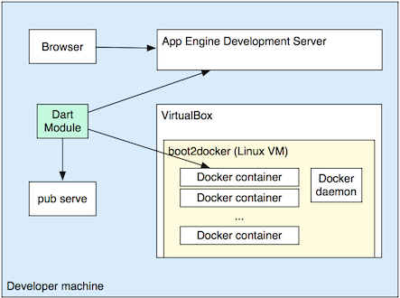

After you’ve set up your App Engine development environment, you can create a simple Dart app and run it locally using the App Engine development server.
All App Engine applications require an app.yaml file,
which configures certain aspects of the application.
This file lives in the top directory of a Dart App Engine project.
Create a helloworld directory; this is the
directory for the Dart project you are creating—a
simple “HelloWorld” example. Change directories into helloworld.
$ mkdir helloworld $ cd helloworld
Create app.yaml with the following content:
version: helloworldruntime: customvm: trueapi_version: 1
The version field in the app.yaml file is the way that App Engine
distinguishes between different deployed application instances.
Create Dockerfile with the following content:
FROM google/dart-runtime
Your application needs several Dart packages
for use with App Engine.
The pubspec.yaml file specifies package dependencies for a Dart program.
Create pubspec.yaml file with the following content:
name: helloworld version: 0.1.0 author: <your name> dependencies: appengine: '>=0.2.1 <0.3.0'
In this step, you create the bin/server.dart file
that contains the main() method for the Dart program.
The Dart runtime for App Engine always starts by running
the bin/server.dart file.
This file launches a Dart runtime instance on App Engine,
and passes a method for handling HTTP requests to App Engine.
Create the bin directory in the helloworld directory.
$ mkdir bin
Now, create bin/server.dart with the code
for the HelloWorld example:
import 'dart:io';
import 'package:appengine/appengine.dart';
main() {
runAppEngine((HttpRequest request) {
request.response..write('Hello, world!')
..close();
});
}
Your directory structure should look like this:

The appengine library imported by server.dart
includes the top-level method runAppEngine(),
which starts Dart’s runtime and connects it to App Engine.
runAppEngine() takes a callback function as a parameter.
This function handles HTTP requests.
In the HelloWorld example, the HTTP request handler
function is requestHandler.
The request handler receives an
HttpRequest
object as a parameter.
This object contains information about the request.
The server also sends its response through the
HttpRequest object’s response member.
For more information about Dart servers refer to
Write HTTP Clients & Servers.
You now need to install the required libraries into the HelloWorld project.
You do this with the pub get command, which you got, along with some
other command line tools, when you downloaded Dart.
From the helloworld directory, run pub get.
$ pub get $ cd ..
You can run the pub get command to resolve any dependencies for your app.
During deployment pub get runs automatically at the server side to
ensure that the needed packages are available.
Pull the Docker images using the following command:
$ docker pull google/dart-runtime
This step can take awhile but needs to be done only once.
Run the application using the following gcloud preview app
command. This command allows you to run the app locally using the
App Engine development server.
$ gcloud preview app run app.yaml
The gcloud output includes lines similar to the following:
Module [default] found in file
[/usr/local/prj/dart/appengine/apps/hello/app.yaml]
INFO: Looking for the Dockerfile in /usr/local/prj/dart/appengine/apps/hello
INFO: Using Dockerfile found in /usr/local/prj/dart/appengine/apps/hello
INFO: Skipping SDK update check.
INFO: Starting API server at: http://localhost:40800
INFO: Health checks starting for instance 0.
INFO: Starting module "default" running at: http://localhost:8080
INFO: Building image <cloud_project_name>.default.my-version...
INFO: Starting admin server at: http://localhost:8000
INFO: Image <cloud_project_name>.default.my-version built, id = 77cc15d8a6e5
INFO: Creating container...
INFO: Container f5f012c233e0c6d0bded64f3f3e3b228c0790f142def7746e99362466fb76e8c
created.
INFO: default: "GET /_ah/start HTTP/1.1" 200 2
INFO: default: "GET /_ah/health?IsLastSuccessful=no HTTP/1.1" 200 2
The “200 2” status indicates a successful launch. The first few times that
you build you may see some 50x errors. Also, this step can take awhile
the first time that you run it since pub get is run inside a container
that fetches several megabytes of data.
Tip: If you try to preview your app and you get an “Unable to bind localhost:8080” error, another process might be using port 8080. Use one of the following commands to see what process is listening on this port.
$ sudo lsof -i :8080 [Mac OS X or Linux] $ netstat -ano [Windows]
You can either kill the process, or you can specify a different
port to the gcloud preview app command using the
--host flag. For example:
--host localhost:7777 --host 127.0.0.1:7777
In your browser, navigate to http://localhost:8080.
You should see “Hello, World!”

If you make any changes to the code, for example, if you change “Hello, World!” to “Hola, Mundo!” and save the file, the development server restarts the Dart server application. Refresh the browser to see the change.
When the application is running locally, changes to files in the application directory are monitored. Changes to an application file cause the application to restart and run the new code.
This diagram shows how the app runs in the App Engine development server.

For this simple example, you don’t need to worry about pub serve.
You’ll learn more about the role that pub serve plays in
Get the client/server code and run it
locally.
Deploying helloworld to App Engine is as simple as running the following command:
$ gcloud preview app deploy app.yaml
Note that this command can take awhile.
Then navigate to http://helloworld.my_project_name.appspot.com/
and you should see “Hello, world!”
Depending on what you want to do now, you can use one of these links to learn more:
Or you can look at the code for other samples in the appengine_samples repo.